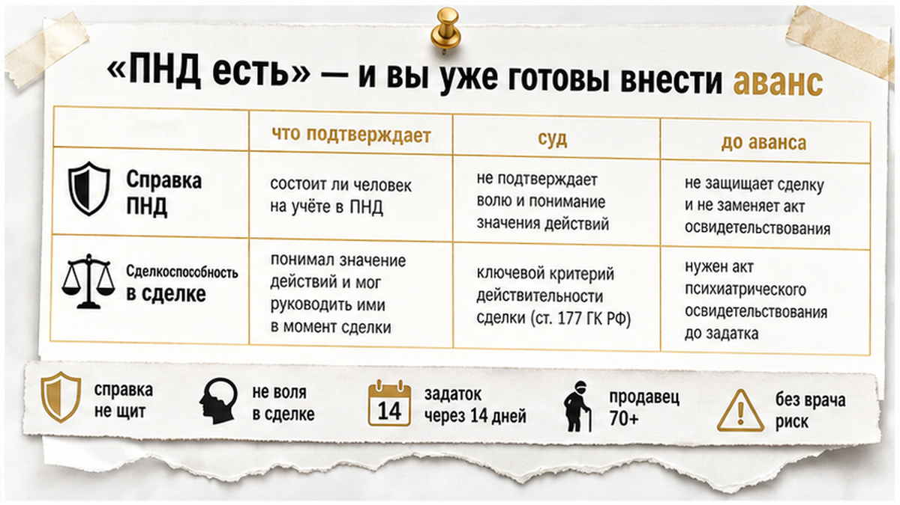
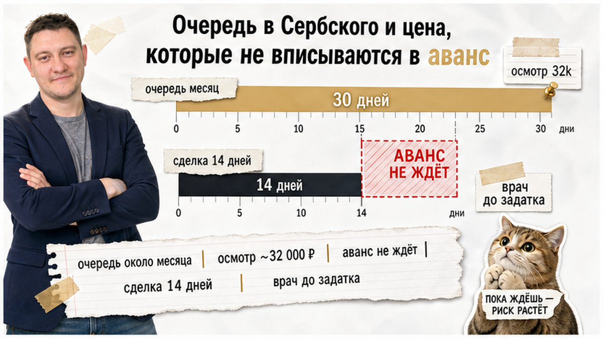
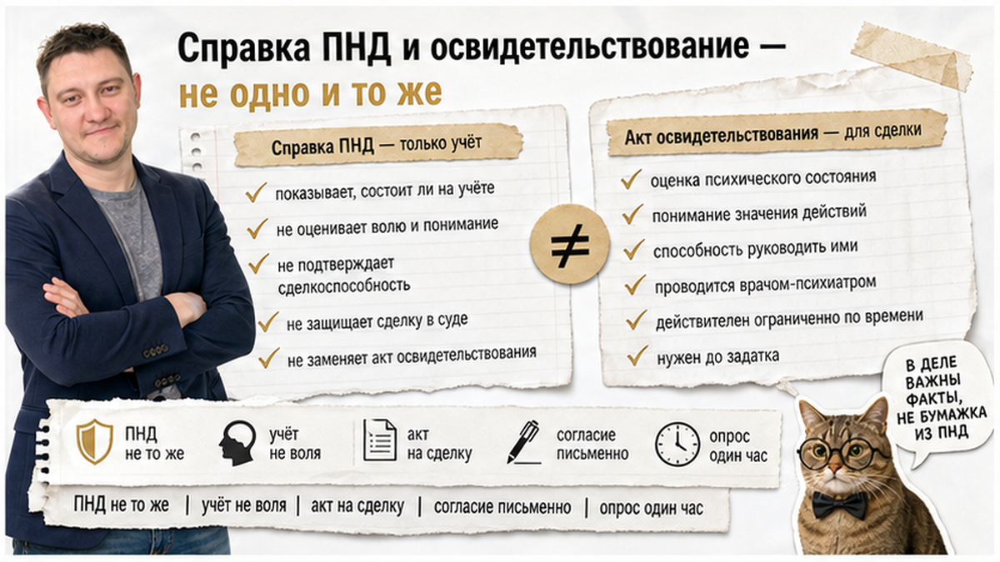
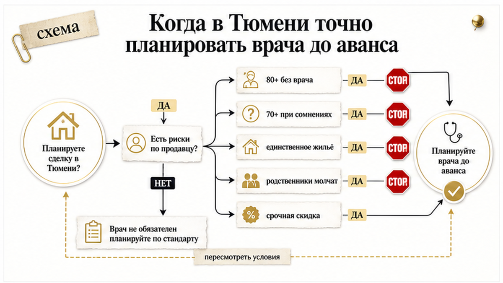
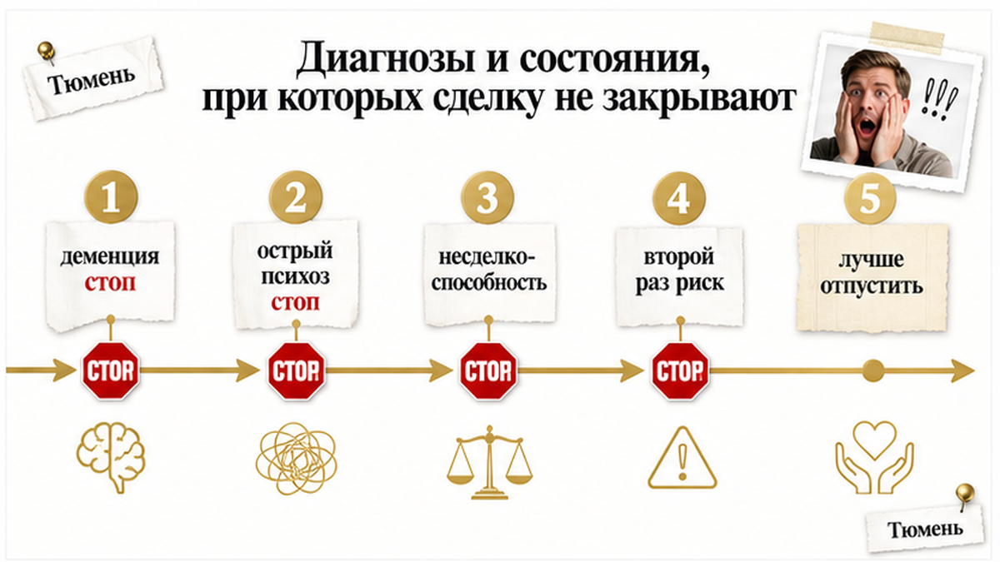
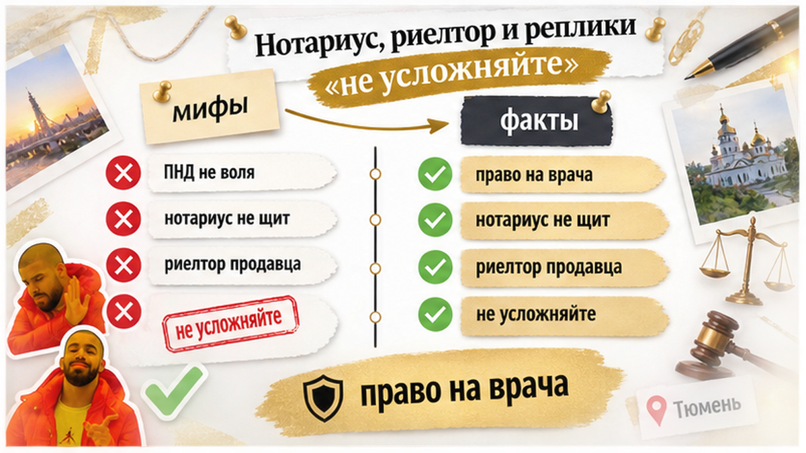

«Справка из ПНД есть — значит, всё нормально».
Так на вторичке в Тюмени часто закрывают разговор о пожилом продавце.
Квартира нравится. Продавец бодрый, отвечает чётко. Риелтор напротив кивает и показывает бумагу: «не наблюдается в ПНД».
Аванс и ипотека уже на столе. Никто не считает календарь.
Очередь в Институт Сербского — около месяца. Это не «завтра съездим к врачу».
Обычный человек видит спокойного пенсионера и справку.
Риэлтор спрашивает:
«А когда запись к врачу, который оценит сделкоспособность в день подписания?»
Я веду сделки в Тюмени от звонка до регистрации. Покажу, как встроить медосвидетельствование в график — до того, как вы внесёте аванс.
Быстрый инсайт. Справка из ПНД подтверждает отсутствие диспансерного наблюдения, а не волю продавца в момент подписания. Очередь в НМИЦ им. Сербского — около месяца, освидетельствование — порядка 32 000 ₽. При продавце 70+ и авансе через две недели календарь ломается раньше, чем суд. Сначала врач в графике — потом аванс.

«Ну бумажка же есть, чего ещё надо?»
Типичная сцена: продавец бодрый, риелтор показывает справку, покупатель успокаивается. Подписывается соглашение о задатке — сделка через две недели.
Проблема в том, что справка подтверждает отсутствие диспансерного наблюдения, а не сделкоспособность в момент подписания договора.
Человек может не обращаться к врачу при расстройствах. В день сделки он может быть в аффекте, под давлением родственников или мошенников — справка это не покажет (материалы m2.ru об освидетельствовании, 2026).
После историй с пенсионерами и оспариванием сделок рынок резко перестраховывается. Публичные материалы практиков по недвижимости в августе 2026 описывают одну линию: при продавце 70+ и сомнениях — без серьёзного медосвидетельствования к сделке не подходить; при 80+ — «вообще не экономить».
ПНД, ипотека и риелтор — не броня. В суде смотрят документы, а не ваши ощущения «он нормальный».
Вердикт: справка — разумный фильтр, но недостаточный щит до аванса у пожилого собственника.

«Ну пройдём врача завтра».
Завтра — часто через тридцать дней.
Институт Сербского — не «быстрая справка у районного психиатра». По публичным сигналам рынка (август 2026): обычная очередь около месяца; цена освидетельствования поднялась с ориентира ~26 000 ₽ до ~32 000 ₽. Иногда клиника сама звонит и предлагает окно раньше — спрос растёт.
Если до сделки осталось 14 дней, а врач — через 30, календарь ломается: аванс уже внесён, ипотека ждёт, альтернатива по другой квартире тикает, стороны нервничают.
На практике в Тюмени медосвидетельствование закладывают до соглашения о задатке, если продавец 70+ или есть любые сомнения: единственное жильё, непонятный переезд, родственники не участвуют, срочная скидка, странное поведение.
Обычный человек видит горячую вторичку — в июле 2026 в Тюмени сделок было в два раза больше, чем в январе (URA.RU). Ипотека на вторичку растёт. Объекты уходят быстрее.
Риэлтор видит не «берите быстрее», а месяц ожидания в Москве у федерального эталона.
Вердикт: аванс не ждёт очередь. Очередь не ускорится от вашей спешки.

«У нас же и ПНД, и НД — чего ещё?»
Два разных вопроса. Два разных веса в суде.
Справка из ПНД/НД — что человек не состоит на учёте в диспансере по месту жительства. В Тюмени её берут в ГБУЗ ТО «Областная клиническая психиатрическая больница» по прописке продавца. Это разумный фильтр, но недостаточный для защиты покупателя.
Медосвидетельствование — врач в день сделки (или незадолго до неё) оценивает: ориентируется ли продавец в месте и времени, понимает ли, что продаёт квартиру, не находится ли в состоянии, когда не руководит действиями. Результат — акт или заключение, которое может использоваться в суде (m2.ru; ст. 177 ГК РФ — недействительность сделки, если гражданин не был способен понимать значение действий).
Инициатор — любой участник сделки. Продавец подписывает согласие на освидетельствование — без него документ слабее.
Процедура обычно в формате опроса ~1 час, наедине с врачом; нужны лицензия клиники на «Психиатрию» и сертификат врача.
Освидетельствование может проходить в клинике или с выездом врача в банк или к нотариусу. В Москве и Московской области ориентир от ~10 000 ₽ (m2.ru); в регионах, включая Тюмень, тарифы частных клиник — отдельный прайс, плюс Сербский по своей вилке.
Обычный человек путает «не состоит на учёте» и «понимает, что подписывает».
Риэлтор различает: первая бумага — про прошлое наблюдение, вторая — про момент сделки.

«Бабушке 78, но она же всё понимает».
Понимание на показе и понимание в суде — разные экзамены.
Чеклист красных флагов (сводка практики + канон m2.ru):
В суде потом спросят не «как он выглядел на показе», а: был ли врач, было ли видео, были ли родственники, понимал ли продавец переезд. Документы — не эмоции.
«А если продавец в командировке — подпишем по доверенности?»
Доверенность — отдельный риск. С пожилым собственником и спешкой это не замена личному осмотру и врачу.
Вердикт: возраст сам по себе не отменяет сделку. Но без документов о состоянии в момент подписания покупатель берёт риск ст. 177 ГК РФ на себя.

«Ну пройдёт через неделю ещё раз — вдруг отпустит».
Рискованнее, чем кажется.
Безусловные препятствия к сделке (позиция специалистов, контекст дел ВС РФ): установленные диагнозы деменция, умственная отсталость средней или тяжёлой формы, острый психотический эпизод с галлюцинациями, дезориентацией, нарушением критики.
Если освидетельствование выявило несделкоспособность — от покупки лучше отказаться. Ждать «через неделю пройдём ещё раз» рискованнее: проблема может вернуться (m2.ru).
Обычный человек слышит «временное состояние» и надеется на второй шанс.
Риэлтор слышит сигнал: объект лучше отпустить, пока аванс ещё не ваш.
После волны оспариваний сделок с пожилыми продавцами (в т.ч. на фоне публичных резонансных кейсов 2025–2026) покупатели массово тянут освидетельствование ближе к дню сделки. Отсюда и месяц в Сербском.
«Сначала аванс — а документы догоним».
Догонять месяц очереди с уже внесённым задатком — дорогое увлечение.
Алгоритм до аванса:
Для тюменского продавца 80+ поездка в Москву в НМИЦ им. Сербского — это перелёт или поезд, ночёвка, ~32 000 ₽ и месяц ожидания. Закладывать это нужно до обсуждения аванса, а не после.
Юридическая проверка и безопасный расчёт — отдельные шаги. Про порядок денег на вторичке писал в материале о расписке без денег на счёте: сначала деньги под контролем, потом подписи. Без календаря врача аванс остаётся заложником очереди.
Вердикт: график сделки строят от врача назад, а не от задатка вперёд.

«Нотариус же всё проверил».
Нотариус удостоверяет сделку, но не раскладывает всю биографию продавца по бракам, наследству и давлению третьих лиц. Риелтор продавца защищает продавца, не покупателя.
Медосвидетельствование — добровольная, но на практике критичная страховка при пожилом собственнике. Оно не отменяет справки ПНД/НД, а дополняет их.
Типичные реплики, которые не закрывают риск:
Если покупатель настаивает на освидетельствовании — это право проверить юридическую чистоту (harant.ru, разбор ст. 177 ГК). Продавец не должен препятствовать, если хочет закрыть сделку с покупателем, который не готов брать риск на себя.
Обычный человек слышит «не усложняйте» и экономит на враче.
Риэлтор слышит цену оспаривания сделки через год.
Проверка не обещает, что суда не будет.
Она обещает, что вы вошли в аванс с открытыми глазами.
Не подписывайте аванс, пока не ясно, куда уйдёт задаток, если сделка сорвётся из‑за очереди к врачу.
Материал — ориентир для покупателя, не индивидуальная юридическая консультация.
Освидетельствование не гарантирует, что сделку никогда не оспорят: при споре суды смотрят комплекс доказательств, приоритет у судебной экспертизы.
Справка ПНД не обязательна по закону — её нельзя «заставить» продавца выдать; только договориться или отказаться от объекта.
Цены и очереди — рынок августа 2026; в конкретной клинике цифры запрашивайте письменно.
Сербский — Москва; для тюменской сделки нужны согласие продавца и логистика, не «рядом с МФЦ».
Нет. Справка показывает отсутствие диспансерного учёта на дату выдачи, но не доказывает состояние продавца в момент подписания договора. При оспаривании по ст. 177 ГК РФ весомее акт целевого освидетельствования.
По публичным сигналам рынка в августе 2026 — около месяца. Иногда клиника предлагает окна раньше, но на это нельзя строить график с уже внесённым авансом.
Можно — но рискованно: при срыве сроков вы теряете задаток, альтернативу или ипотечное одобрение. Безопаснее: запись и согласие продавца до задатка, дата сделки после заключения врача.
Обычно договариваются стороны; ориентир по Сербскому — порядка 32 000 ₽. Госсправки ПНД/НД в Тюмени — бесплатно или за символическую плату, но они не заменяют полноценное освидетельствование при высоком риске.
По закону — нет. Покупатель может настоять как условие сделки. Отказ продавца — повод искать другой объект, а не вносить аванс «на авось».
Напишите в Telegram, в MAX по номеру +7 922 001 65 05 или позвоните — разберём объект, документы и календарь врача до аванса.
Разберём связку: ЕГРН, продавец, очередь в Сербского и сроки задатка — без обещания «нулевого риска», с понятным планом, что проверить до денег.
Материал проверен: Святослав Шакин, личный риэлтор в Тюмени. Материал — ориентир для покупателя, не индивидуальная юридическая консультация. Цены и очереди в клиниках запрашивайте письменно — цифры в обзорах расходятся.